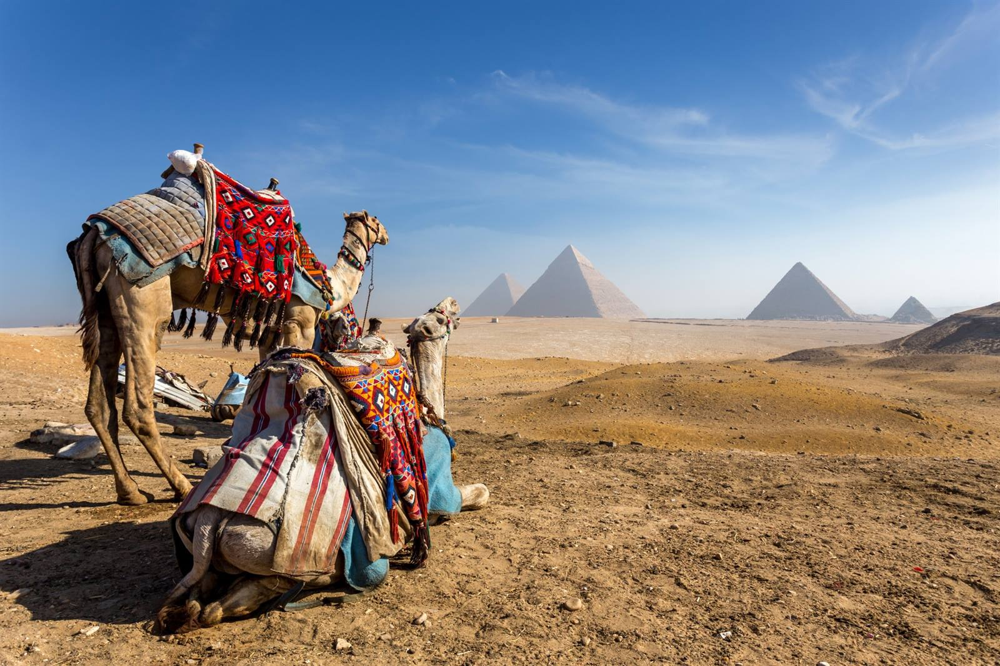

Egypte heeft veel te bieden op het gebied van toerisme. De piramides van Gizeh en de Grote Sfinx van Gizeh zijn ongetwijfeld de beroemdste bezienswaardigheden van het land. Ze liggen heel dicht bij Caïro, dus ze zijn gemakkelijk te bezoeken vanuit de hoofdstad. In Caïro vind je het Egyptisch Museum, een van de beroemdste musea ter wereld. Hier wordt het beroemde dodenmasker van farao Toetanchamon tentoongesteld, samen met duizenden andere oude artefacten. De Egyptische hoofdstad kent daarnaast nog vele andere musea, waaronder het Koptisch Museum, de Citadel van Caïro, een kasteel uit de tijd van de beroemde Arabische generaal Saladin, zeker een bezoek waard.
Je moet ook een cruise op de Nijl maken vanuit Caïro in het zuiden. Uiteindelijk kom je aan in Luxor. Deze stad stond in de oudheid bekend als Thebe en was lange tijd de hoofdstad van het oude Egyptische rijk. Honderden oude tempels en beelden uit deze periode zijn nog steeds bewaard gebleven. Een bezoek aan deze stad mag je dan ook niet missen. Bovendien bevinden de tempels van Abu Simbel zich in het uiterste zuiden van het land. Hoewel iets moeilijker te bereiken, is een bezoek aan deze tempels voor veel toeristen het absolute hoogtepunt van hun reis. De tempels zijn ruim 3000 jaar geleden in de rotsen uitgehouwen en zijn nog steeds te bewonderen.
De bekendste kuststad van Egypte is Alexandrië. Met ongeveer de helft van de bevolking van Caïro is de bevolkingsdichtheid van Alexandrië aanzienlijk lager dan die van de hoofdstad. Ook de ligging vlakbij de Middellandse Zee draagt bij aan het gevoel van wat meer ruimte. Er zijn verschillende prachtige stranden en duikplekken in de buurt van Alexandrië. Uiteraard zijn hier ook veel historische gebouwen te vinden.
